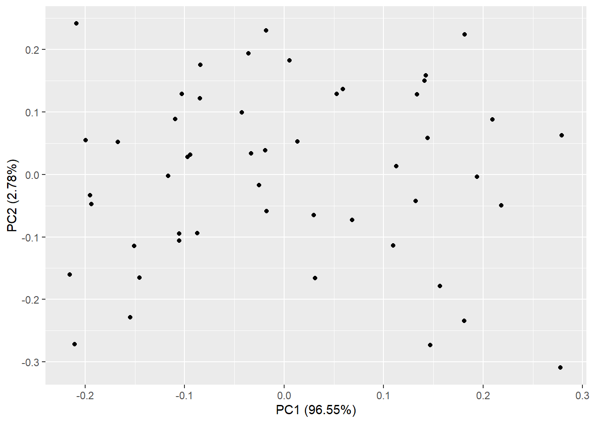
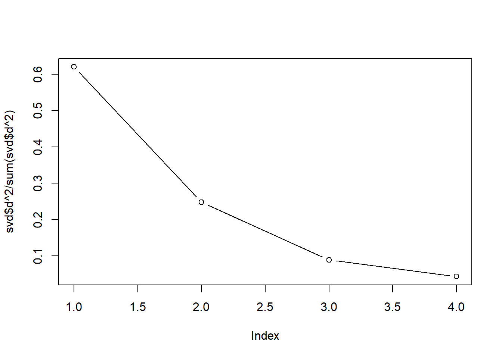
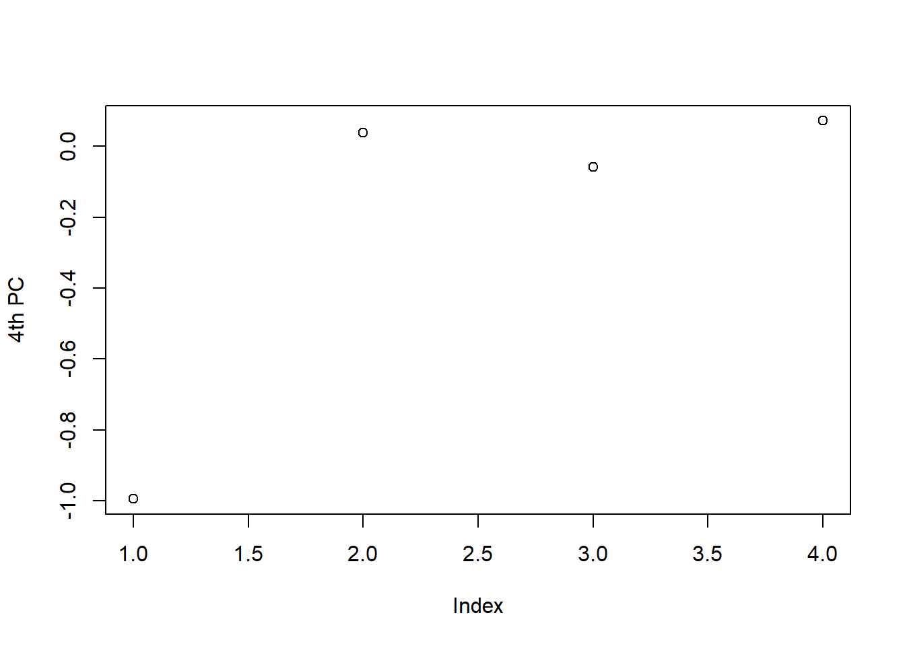
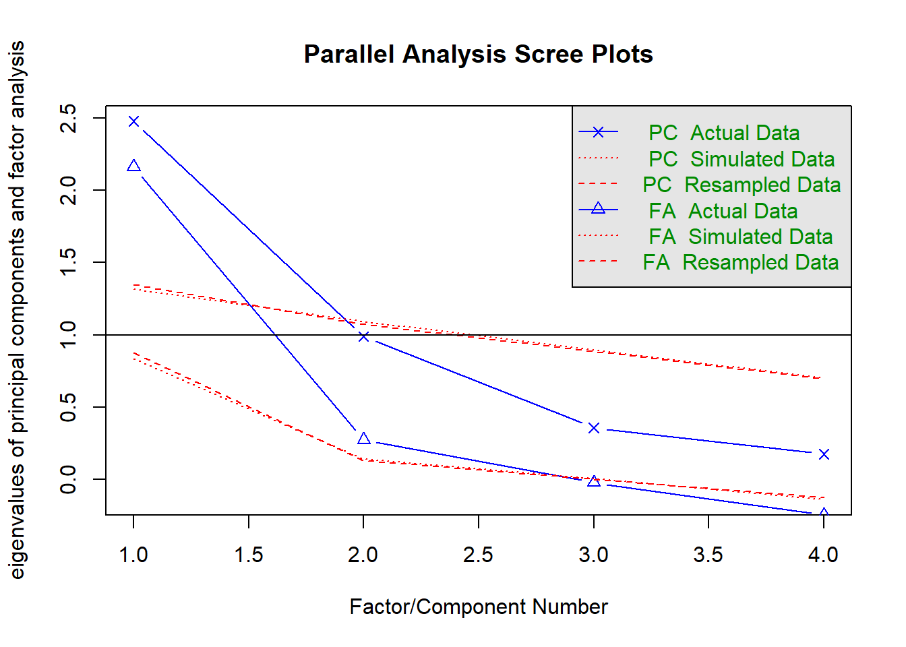

14 主成分分析
主成分分析(Principal component analysis，PCA) 是一种线性降维方法。
对于一组变量\(X_1,X_2,...,X_p\),存在它们的线性组合\(PC\)，令\(var(PC)\)最大，得到\(PC_1\),再找\(PC_2\)，\(PC_2\)与\(PC_1\)正交，以此类推，找到一组\(PC_1,PC_2,...,PC_m\)无关主成分。
14.1 线性代数
14.1.1 列向量
\[ \vec v= \begin{bmatrix} v_1 \\ v_2 \\ \end{bmatrix} \]
\[ \vec v= \begin{bmatrix} v_1 \\ v_2 \\ \end{bmatrix} \]
为了方便起见，如不作特殊说明，以下行向量均为列向量。
向量加法：\(\vec v+\vec w=(v_1+w_1,v_2+w_2 )\)
数乘：\(k \vec v=(k v_1,k v_2)\)
线性组合\(c\vec v+d\vec w\)
向量点积或内积：\(\vec v·\vec w=v_1w_1+v_2w_2\) ，点积为零，向量垂直。
长度：\(||\vec v||=\sqrt{\vec v·\vec v}\)
单位向量：\(\vec u=\frac{\vec v}{||\vec v||}\)
正交：\(\vec v^T\vec w=0\)
14.1.2 矩阵运算规则
矩阵A，B，C 满足加法交换律，分配律和结合律，乘法结合律和分配律，指数运算法则（\(A^0=I\)）
通常不满足乘法交换律
\[ AB\ne BA \]
例外：\(AI=IA\)
14.1.3 单位矩阵
主对角线都是1，其余都是0。
\[ I= \begin{bmatrix} 1 & 0 & ... & 0 & 0 \\ 0 & 1 & ... & 0 & 0 \\ \vdots & \vdots & &\vdots & \vdots & \\ 0 & 0 & ... & 1 & 0 \\ 0 & 0 & ... & 0 & 1 \\ \end{bmatrix} \]
对于单位矩阵 \(I\vec x=\vec x\) 恒成立。
14.1.4 线性方程组
矩阵A，：\(A\vec x=\vec b\)
Code
solve(I,x)
#> [1] 6 4 2线性组合\(x_1\vec u+x_2\vec v+x_3\vec w\)改写成矩阵乘向量，矩阵\(A\)的列的线性组合
\[ A= \begin{bmatrix} \vec u&\vec v&\vec w \end{bmatrix} = \begin{bmatrix} u_1 & v_1 & w_1 \\ u_2 & v_2 & w_2 \\ u_3 & v_3 & w_3 \\ \end{bmatrix} \]
\[ \vec x= \begin{bmatrix} x_1\\ x_2\\ x_3\\ \end{bmatrix} \]
矩阵的列的线性组合：
\[ {\begin{bmatrix} \vec u&\vec v&\vec w \end{bmatrix}} \begin{bmatrix} x_1\\ x_2\\ x_3\\ \end{bmatrix}=x_1\vec u+x_2\vec v+x_3\vec w \]
\[ \vec b= \begin{bmatrix} b_1\\ b_2\\ b_3\\ \end{bmatrix}= \begin{bmatrix} x_1u_1+x_2v_1+x_3w_1 \\ x_1u_2+x_2v_2+x_3w_2 \\ x_1u_3+x_2v_3+x_3w_3 \\ \end{bmatrix} \]
也可以用行的方法，矩阵\(A\)的每一行乘向量\(\vec x\)，即计算每一行与\(\vec x\)的点积。
\[ \begin{bmatrix} (u_1,v_1,w_1)·(x_1,x_2,x_3) \\ (u_2,v_2,w_2)·(x_1,x_2,x_3) \\ (u_3,v_3,w_3)·(x_1,x_2,x_3) \\ \end{bmatrix} \]
14.1.5 消元法（elimination）
消元法求解线性方程组\(A\vec x=\vec b\)：
利用第一式使得第一主元以下都变成0：\(a_{11}\) 是第一个主元，\(a_{i1}/a_{11}\) 是乘数，消去其余所有方程的\(x_1\) ，使得（i，1）单元为0，i≥2
利用新的第二式使得第二主元以下都变成0：第二个主元是变换后的\(a_{22}'\)，使得（i，2）单元为0，i≥3。
列3到n：以此类推，使得下三角单元为0，找到n个主元，得到一个上三角系统\(U\) ，系统由底部向上求解，反向代入法\(U\vec x=\vec c\) 。
主元不可为零，否则无解或无限多解。若主元位置是0，交换非零单元行。
消元矩阵\(E_{ij}\) 是从单位矩阵\(I\) 开始，把位置\(i,j\) 的0 换成了非零乘数\(-l_{ij}\)，从行i减去行j的 \(l\) 倍。
\[ l_{ij}=\frac{第i行要消去的单元}{主元(pivot)：执行消元的第j行的第一个非零系数} \]
消元矩阵乘Ax=b的顺序\(E_{21},E_{31},...,E_{n1}\)，然后\(E_{32},E_{42},...,E_{n1}\)，以此类推。
行交换矩阵\(P_{ij}\)：将\(I\) 的第i行与第j行交换。左乘\(P_{ij}\) ，交换行i与行j
14.1.6 逆矩阵
当\(A\) 是可逆矩阵，\(A\vec x=\vec b\) 的解是\(\vec x=A^{-1}\vec b\)。
若矩阵A有逆矩阵，则\(A^{-1}A=I 且AA^{-1}=I\)。
可逆性：
消元法：A必须有n个非零主元(允许交换行)。
代数法：\(det(A)\ne 0\)。
线性方程：\(A\vec x=\vec 0\) 必须是唯一解\(\vec x=\vec 0\)。
矩阵A，B可逆，则\((AB)^{-1}=B^{-1}A^{-1}\)
Gauss-Jordan Elimination :
\[ A^{-1}[A\ \ \ I]=[I\ \ \ A^{-1}] \]
14.1.7 消元=分解
\(A=LU\)，下三角\(L\)的对角线都是1，乘数\(l_{ij}\) 在对角线下方。
\[ \begin{aligned} L\vec c =&\vec b\\ U\vec x=&\vec c\\ L(U\vec x)=&L\vec c\\ A\vec x=&\vec b \end{aligned} \]
14.1.8 特征值与特征向量（eigen）
\[ A\vec x=\lambda \vec x \]
其中\(\vec x\) 是特征向量，数\(\lambda\) 是矩阵的一个特征值。
特征值方程式：
\[ det(A-\lambda I)=0 \]
特征向量：对于每个特征值λ求解\((A-λI)\vec x=\vec 0\)，得到一个特征向量。维持相同的方向。
行列式为零，奇异矩阵（\(A-\lambda I\)）
n个特征值的乘积等于行列式。
n个特征值的和等于矩阵的迹（主对角线单元的和）
Code
y <- eigen(A)
y$values
#> [1] 5.3722813 -0.3722813
y$vectors
#> [,1] [,2]
#> [1,] -0.5657675 -0.9093767
#> [2,] -0.8245648 0.415973614.1.9 奇异值分解（singular value decomposition, SVD）
\[ \begin{aligned} \\A=&U\Sigma V^T \\ =& \begin{bmatrix} u_1 & u_2 & \dots & u_r \end{bmatrix} \begin{bmatrix} \sigma_1 & & \\ & \ddots & \\ & & \sigma_r \\ \end{bmatrix} \begin{bmatrix} v_1^T\\ v_2^T\\ \vdots\\ v_r^T\\ \end{bmatrix}\\ =&\sum\sigma_iu_iv_i^T \end{aligned} \]
\(u\)是左奇异向量（\(AA^T\)的单位特征向量），\(v\)是右奇异向量（\(A^TA\)的单位特征向量），\(\sigma\) 是\(r\)个奇异值（\(AA^T与A^TA的相同特征值\lambda=\sigma^2的平方根\)）。
\(AA^T\mu_i=\sigma_i^2\mu_i\)，
\(A^TA\nu_i=\sigma_i^2\nu_i\),
\(A\nu_i=\sigma_i\mu_i\)
14.2 PCA by SVD
14.2.1 数据矩阵
R中数据框 n个观测，p个变量
\[ \begin{bmatrix} x_{11}& x_{12} & ... & x_{1p}\\ x_{21} & x_{22} & ... & x_{2p}\\ \vdots & \vdots & & \vdots \\ x_{n1}& x_{n2} & ... & x_{np} \end{bmatrix} =(X_1,X_2,...X_p) \]
转化成矩阵
\[ \begin{bmatrix} x_{11}& x_{21} & ... & x_{n1}\\ x_{12} & x_{22} & ... & x_{n2}\\ \vdots & \vdots & & \vdots \\ x_{1p}& x_{2p} & ... & x_{np} \end{bmatrix} =[X_1,X_2,...X_p]^T \]
数据矩阵中心化(变量值减去均值)，使得变量均值近似零。
Code
df <- as_tibble(USArrests, rownames = "state") |> column_to_rownames("state")
head(df)| Murder | Assault | UrbanPop | Rape | |
|---|---|---|---|---|
| Alabama | 13.2 | 236 | 58 | 21.2 |
| Alaska | 10.0 | 263 | 48 | 44.5 |
| Arizona | 8.1 | 294 | 80 | 31.0 |
| Arkansas | 8.8 | 190 | 50 | 19.5 |
| California | 9.0 | 276 | 91 | 40.6 |
| Colorado | 7.9 | 204 | 78 | 38.7 |
14.2.2 协方差矩阵
当\(\Sigma\) 未知时，其用其估计值样本协方差矩阵（p×p） \(A_{p×n}\) 代替
\[ S=\frac{AA^T}{n-1} \]
- A显示来自每个变量值与变量平均值的距离\(X_i-\bar X\)；
- $(AA^T)_{ii} $显示距离平方的总和(样本方差 \(s_i^2\));
- \((AA^T)_{ij}，i\ne j\) 显示样本协方差 \(s_{ij} = (A 的行 i) · (A 的行 j)\)。
Code
# 内置协方差矩阵函数
cov(df_center)
#> Murder Assault UrbanPop Rape
#> Murder 18.970465 291.0624 4.386204 22.99141
#> Assault 291.062367 6945.1657 312.275102 519.26906
#> UrbanPop 4.386204 312.2751 209.518776 55.76808
#> Rape 22.991412 519.2691 55.768082 87.72916
# 协方差矩阵公式
A <- as.matrix(t((df_center)))
AA_T <-A%*%t(A)
S <- AA_T/(50-1)
S
#> Murder Assault UrbanPop Rape
#> Murder 18.970465 291.0624 4.386204 22.99141
#> Assault 291.062367 6945.1657 312.275102 519.26906
#> UrbanPop 4.386204 312.2751 209.518776 55.76808
#> Rape 22.991412 519.2691 55.768082 87.72916相关系数矩阵R=（rij）
\[ r_{ij}=\frac {S_{ij}}{\sqrt{S_{ii}×S_{jj}}} \]
总方差T=所有特征值的总和=样本方差的总和=迹(对角线的总和)
sum(eigen(AA_T)$values)=sum(diag(AA_T))= sum(svd$d^2)
Code
# AA^T的特征值
y <- eigen(AA_T)
y$values
#> [1] 343544.6277 9897.6259 2063.5199 302.0481
y$vectors
#> [,1] [,2] [,3] [,4]
#> [1,] -0.04170432 0.04482166 0.07989066 0.99492173
#> [2,] -0.99522128 0.05876003 -0.06756974 -0.03893830
#> [3,] -0.04633575 -0.97685748 -0.20054629 0.05816914
#> [4,] -0.07515550 -0.20071807 0.97408059 -0.07232502
sum(y$values)
#> [1] 355807.8
# 迹
sum(diag(AA_T))
#> [1] 355807.814.2.3 奇异值分解
Code
svd <- svd(df_center)
svd$d
#> [1] 586.12680 99.48681 45.42598 17.37953
svd$u
#> [,1] [,2] [,3] [,4]
#> [1,] 0.110559974 -0.115070601 -0.0549230353 -0.13854810
#> [2,] 0.158374348 -0.180757049 0.4430630613 0.23556719
#> [3,] 0.211674702 0.088759533 -0.0371472066 0.25050650
#> [4,] 0.031290218 -0.167900759 0.0046270736 0.02997743
#> [5,] 0.183275961 0.226362360 0.1485025226 0.16178952
#> [6,] 0.059673070 0.137903543 0.2703158440 0.09905122
#> [7,] -0.103880733 0.129992406 -0.1853709424 0.04027165
#> [8,] 0.113850834 0.013607811 -0.2483371129 0.21450414
#> [9,] 0.281925975 0.063070571 -0.0659960001 -0.07179024
#> [10,] 0.069157692 -0.073278451 0.0794595792 -0.42254726
#> [11,] -0.210766860 0.244165103 0.0819892633 -0.19982413
#> [12,] -0.088371667 -0.095180363 -0.0334624255 0.19263054
#> [13,] 0.134769639 0.129635879 -0.1295132090 -0.02115366
#> [14,] -0.098188584 0.028609467 0.0822912413 -0.09490649
#> [15,] -0.197204409 -0.033593704 -0.0143976931 0.05002989
#> [16,] -0.095183660 0.031735200 0.0084613286 -0.03756095
#> [17,] -0.106432909 -0.107283279 0.0492469047 -0.22303344
#> [18,] 0.133550677 -0.043170722 -0.0842660839 -0.25797930
#> [19,] -0.152289648 -0.115470853 -0.1032978343 0.12176391
#> [20,] 0.220652144 -0.050328595 -0.0516702708 0.11095376
#> [21,] -0.036282734 0.195505097 -0.1652611113 0.05954240
#> [22,] 0.145790171 0.059350144 0.1423049485 -0.02871469
#> [23,] -0.168828341 0.052364735 0.0001447137 0.04211251
#> [24,] 0.148186975 -0.275699048 -0.1101448106 -0.22323720
#> [25,] 0.013625531 0.053028550 0.1210888443 -0.03909228
#> [26,] -0.106604296 -0.095595605 0.0404692482 -0.01415128
#> [27,] -0.117886683 -0.002122853 0.0103029331 0.03777815
#> [28,] 0.142654419 0.151800861 0.3497710768 -0.01922930
#> [29,] -0.195823419 -0.047589808 -0.0502440852 0.05385132
#> [30,] -0.018452876 0.232566892 -0.1389107520 -0.09277738
#> [31,] 0.195978348 -0.003381886 0.0497792196 0.07947555
#> [32,] 0.143815690 0.160061068 -0.1039330211 -0.05132586
#> [33,] 0.280358301 -0.312570223 -0.2574773919 0.12147582
#> [34,] -0.217522209 -0.162182694 -0.0288784029 0.13239506
#> [35,] -0.085453901 0.123426653 0.0364842031 -0.11675320
#> [36,] -0.033599765 0.033875153 -0.0099754209 0.01037691
#> [37,] -0.019023596 0.038860107 0.1789720343 0.16766914
#> [38,] -0.110367145 0.089575154 -0.0705866644 -0.10788182
#> [39,] 0.005227491 0.184687497 -0.3845820989 0.13281485
#> [40,] 0.183033890 -0.236575232 -0.0447496103 -0.07202417
#> [41,] -0.146908007 -0.166834761 0.0289345417 0.07205531
#> [42,] 0.029867708 -0.065401387 0.1342871897 -0.22571702
#> [43,] 0.053386267 0.130519375 -0.0086604449 -0.24408048
#> [44,] -0.085158019 0.177394945 0.0393644435 0.10746581
#> [45,] -0.212777284 -0.274544518 0.1057275459 0.11536478
#> [46,] -0.025280277 -0.017616556 0.0230130000 -0.06754158
#> [47,] -0.042782277 0.100193851 0.1052509461 0.15484204
#> [48,] -0.156185738 -0.230712766 -0.0088491963 -0.04239920
#> [49,] -0.201622460 0.055359892 -0.0596865630 -0.01179390
#> [50,] -0.017802529 -0.059550133 -0.0835303192 0.02979755
svd$v
#> [,1] [,2] [,3] [,4]
#> [1,] 0.04170432 -0.04482166 0.07989066 -0.99492173
#> [2,] 0.99522128 -0.05876003 -0.06756974 0.03893830
#> [3,] 0.04633575 0.97685748 -0.20054629 -0.05816914
#> [4,] 0.07515550 0.20071807 0.97408059 0.07232502
# 奇异值的平方和
sum(svd$d^2)
#> [1] 355807.8
# 主成分荷载
svd$v
#> [,1] [,2] [,3] [,4]
#> [1,] 0.04170432 -0.04482166 0.07989066 -0.99492173
#> [2,] 0.99522128 -0.05876003 -0.06756974 0.03893830
#> [3,] 0.04633575 0.97685748 -0.20054629 -0.05816914
#> [4,] 0.07515550 0.20071807 0.97408059 0.07232502
# fc贡献百分比
pct <- svd$d^2/sum(svd$d^2)
pct
#> [1] 0.9655342206 0.0278173366 0.0057995349 0.0008489079内置PCA
Code
pca <- prcomp(df_center)
pca
#> Standard deviations (1, .., p=4):
#> [1] 83.732400 14.212402 6.489426 2.482790
#>
#> Rotation (n x k) = (4 x 4):
#> PC1 PC2 PC3 PC4
#> Murder 0.04170432 -0.04482166 0.07989066 -0.99492173
#> Assault 0.99522128 -0.05876003 -0.06756974 0.03893830
#> UrbanPop 0.04633575 0.97685748 -0.20054629 -0.05816914
#> Rape 0.07515550 0.20071807 0.97408059 0.07232502
summary(pca)
#> Importance of components:
#> PC1 PC2 PC3 PC4
#> Standard deviation 83.7324 14.21240 6.4894 2.48279
#> Proportion of Variance 0.9655 0.02782 0.0058 0.00085
#> Cumulative Proportion 0.9655 0.99335 0.9991 1.00000
library(ggfortify)
autoplot(prcomp(df_center),
data=df_center,
)
主成分的推导??????????????
\[ PC= \begin{bmatrix} v_1&v_2&\dots&v_p \end{bmatrix} \begin{bmatrix} X_1\\ X_2\\ \vdots\\ X_p \end{bmatrix}=VX=U \Sigma \]
寻找主成分就是使X的线性组合\(VX\) 的方差尽可能大，即???????????
\[ \begin{aligned} Var(VX) =&E(VX-E(VX))(VX-E(VX))'\\ =&VE(X-E(X))(X-E(X))'V' \\ =&V\Sigma V' \end{aligned} \]
可视化主成分
碎石图

Code
svd$v
#> [,1] [,2] [,3] [,4]
#> [1,] 0.04170432 -0.04482166 0.07989066 -0.99492173
#> [2,] 0.99522128 -0.05876003 -0.06756974 0.03893830
#> [3,] 0.04633575 0.97685748 -0.20054629 -0.05816914
#> [4,] 0.07515550 0.20071807 0.97408059 0.07232502
plot(svd$v[,1],ylab = "1st PC")
Code
plot(svd$v[,2],ylab="2nd PC")
Code
plot(svd$v[,3],ylab="3rd PC")
Code
plot(svd$v[,4],ylab="4th PC")
Code
plot(svd$v[,1],svd$v[,2],xlab="lst PC",ylab="2nd PC")
14.3 主成分分析
Code
Code
df <- as_tibble(USArrests, rownames = "state")
head(df)| state | Murder | Assault | UrbanPop | Rape |
|---|---|---|---|---|
| Alabama | 13.2 | 236 | 58 | 21.2 |
| Alaska | 10.0 | 263 | 48 | 44.5 |
| Arizona | 8.1 | 294 | 80 | 31.0 |
| Arkansas | 8.8 | 190 | 50 | 19.5 |
| California | 9.0 | 276 | 91 | 40.6 |
| Colorado | 7.9 | 204 | 78 | 38.7 |
Code
df |>
select(-state) |>
map_dfr(mean) #apply(.,2,mean)| Murder | Assault | UrbanPop | Rape |
|---|---|---|---|
| 7.788 | 170.76 | 65.54 | 21.232 |
Code
df_pca <- df |>
select(-state) |>
stats::prcomp(scale = TRUE)
options(digits = 3)
df_pca
#> Standard deviations (1, .., p=4):
#> [1] 1.575 0.995 0.597 0.416
#>
#> Rotation (n x k) = (4 x 4):
#> PC1 PC2 PC3 PC4
#> Murder -0.536 -0.418 0.341 0.649
#> Assault -0.583 -0.188 0.268 -0.743
#> UrbanPop -0.278 0.873 0.378 0.134
#> Rape -0.543 0.167 -0.818 0.089
broom::tidy(df_pca, matrix = "scores")[1:6,] #by default df_pca$x 长表| row | PC | value |
|---|---|---|
| 1 | 1 | -0.976 |
| 1 | 2 | -1.122 |
| 1 | 3 | 0.440 |
| 1 | 4 | 0.155 |
| 2 | 1 | -1.931 |
| 2 | 2 | -1.062 |
主成分荷载（loading）：表示主成分与原有变量的相关系数
Code
tidy(df_pca, matrix = "loadings")[1:6,]# df_pca$Rotation 长表| column | PC | value |
|---|---|---|
| Murder | 1 | -0.536 |
| Murder | 2 | -0.418 |
| Murder | 3 | 0.341 |
| Murder | 4 | 0.649 |
| Assault | 1 | -0.583 |
| Assault | 2 | -0.188 |
Code
df_pca$rotation
#> PC1 PC2 PC3 PC4
#> Murder -0.536 -0.418 0.341 0.649
#> Assault -0.583 -0.188 0.268 -0.743
#> UrbanPop -0.278 0.873 0.378 0.134
#> Rape -0.543 0.167 -0.818 0.089例如：
\[ PC_1=-0.531Murrder-0.583Assault-0.278UrbanPop-0.543Rape \]
Code
tidy(df_pca, matrix = "loadings") |>
ggplot(aes(value, column)) +
facet_wrap(~ PC) +
geom_col() +
scale_x_continuous(labels = scales::percent)
特征值 eigenvalues，高维椭球的主轴长度，相关矩阵的特征值。表示方差百分比贡献。
Code
tidy(df_pca, matrix = "eigenvalues") | PC | std.dev | percent | cumulative |
|---|---|---|---|
| 1 | 1.575 | 0.620 | 0.620 |
| 2 | 0.995 | 0.247 | 0.868 |
| 3 | 0.597 | 0.089 | 0.957 |
| 4 | 0.416 | 0.043 | 1.000 |
Code
psych::fa.parallel(df[-1])
#> Parallel analysis suggests that the number of factors = 2 and the number of components = 1Code
# screen plot
tidy(df_pca, matrix = "eigenvalues") |>
ggplot(aes(PC, percent)) +
geom_point(color = "red") +
geom_line()+
scale_y_continuous(labels = scales::percent)
Code
augment(df_pca)| .rownames | .fittedPC1 | .fittedPC2 | .fittedPC3 | .fittedPC4 |
|---|---|---|---|---|
| 1 | -0.976 | -1.122 | 0.440 | 0.155 |
| 2 | -1.931 | -1.062 | -2.020 | -0.434 |
| 3 | -1.745 | 0.738 | -0.054 | -0.826 |
| 4 | 0.140 | -1.109 | -0.113 | -0.181 |
| 5 | -2.499 | 1.527 | -0.593 | -0.339 |
| 6 | -1.499 | 0.978 | -1.084 | 0.001 |
| 7 | 1.345 | 1.078 | 0.637 | -0.117 |
| 8 | -0.047 | 0.322 | 0.711 | -0.873 |
| 9 | -2.983 | -0.039 | 0.571 | -0.095 |
| 10 | -1.623 | -1.266 | 0.339 | 1.066 |
| 11 | 0.903 | 1.555 | -0.050 | 0.894 |
| 12 | 1.623 | -0.209 | -0.257 | -0.494 |
| 13 | -1.365 | 0.675 | 0.671 | -0.121 |
| 14 | 0.500 | 0.150 | -0.226 | 0.420 |
| 15 | 2.231 | 0.103 | -0.163 | 0.017 |
| 16 | 0.789 | 0.267 | -0.025 | 0.204 |
| 17 | 0.743 | -0.949 | 0.028 | 0.664 |
| 18 | -1.549 | -0.862 | 0.776 | 0.450 |
| 19 | 2.373 | -0.373 | 0.065 | -0.327 |
| 20 | -1.746 | -0.423 | 0.156 | -0.553 |
| 21 | 0.481 | 1.460 | 0.603 | -0.178 |
| 22 | -2.087 | 0.154 | -0.381 | 0.101 |
| 23 | 1.676 | 0.626 | -0.152 | 0.067 |
| 24 | -0.986 | -2.370 | 0.733 | 0.213 |
| 25 | -0.690 | 0.261 | -0.374 | 0.224 |
| 26 | 1.174 | -0.531 | -0.244 | 0.122 |
| 27 | 1.253 | 0.192 | -0.174 | 0.016 |
| 28 | -2.846 | 0.768 | -1.152 | 0.311 |
| 29 | 2.360 | 0.018 | -0.036 | -0.033 |
| 30 | -0.180 | 1.435 | 0.757 | 0.241 |
| 31 | -1.960 | -0.141 | -0.182 | -0.336 |
| 32 | -1.666 | 0.815 | 0.637 | -0.013 |
| 33 | -1.112 | -2.206 | 0.855 | -0.945 |
| 34 | 2.962 | -0.593 | -0.298 | -0.251 |
| 35 | 0.224 | 0.735 | 0.031 | 0.469 |
| 36 | 0.309 | 0.285 | 0.015 | 0.010 |
| 37 | -0.059 | 0.536 | -0.930 | -0.235 |
| 38 | 0.879 | 0.565 | 0.397 | 0.355 |
| 39 | 0.855 | 1.477 | 1.356 | -0.607 |
| 40 | -1.307 | -1.914 | 0.298 | -0.130 |
| 41 | 1.968 | -0.815 | -0.385 | -0.108 |
| 42 | -0.990 | -0.852 | -0.186 | 0.646 |
| 43 | -1.342 | 0.408 | 0.487 | 0.637 |
| 44 | 0.545 | 1.457 | -0.291 | -0.081 |
| 45 | 2.773 | -1.388 | -0.833 | -0.143 |
| 46 | 0.095 | -0.198 | -0.012 | 0.209 |
| 47 | 0.215 | 0.960 | -0.619 | -0.219 |
| 48 | 2.087 | -1.411 | -0.104 | 0.131 |
| 49 | 2.059 | 0.605 | 0.137 | 0.182 |
| 50 | 0.623 | -0.318 | 0.238 | -0.165 |
Code
augment(df_pca, new_data = df[1:5,])| .rownames | .fittedPC1 | .fittedPC2 | .fittedPC3 | .fittedPC4 |
|---|---|---|---|---|
| 1 | -0.976 | -1.122 | 0.440 | 0.155 |
| 2 | -1.931 | -1.062 | -2.020 | -0.434 |
| 3 | -1.745 | 0.738 | -0.054 | -0.826 |
| 4 | 0.140 | -1.109 | -0.113 | -0.181 |
| 5 | -2.499 | 1.527 | -0.593 | -0.339 |
| 6 | -1.499 | 0.978 | -1.084 | 0.001 |
| 7 | 1.345 | 1.078 | 0.637 | -0.117 |
| 8 | -0.047 | 0.322 | 0.711 | -0.873 |
| 9 | -2.983 | -0.039 | 0.571 | -0.095 |
| 10 | -1.623 | -1.266 | 0.339 | 1.066 |
| 11 | 0.903 | 1.555 | -0.050 | 0.894 |
| 12 | 1.623 | -0.209 | -0.257 | -0.494 |
| 13 | -1.365 | 0.675 | 0.671 | -0.121 |
| 14 | 0.500 | 0.150 | -0.226 | 0.420 |
| 15 | 2.231 | 0.103 | -0.163 | 0.017 |
| 16 | 0.789 | 0.267 | -0.025 | 0.204 |
| 17 | 0.743 | -0.949 | 0.028 | 0.664 |
| 18 | -1.549 | -0.862 | 0.776 | 0.450 |
| 19 | 2.373 | -0.373 | 0.065 | -0.327 |
| 20 | -1.746 | -0.423 | 0.156 | -0.553 |
| 21 | 0.481 | 1.460 | 0.603 | -0.178 |
| 22 | -2.087 | 0.154 | -0.381 | 0.101 |
| 23 | 1.676 | 0.626 | -0.152 | 0.067 |
| 24 | -0.986 | -2.370 | 0.733 | 0.213 |
| 25 | -0.690 | 0.261 | -0.374 | 0.224 |
| 26 | 1.174 | -0.531 | -0.244 | 0.122 |
| 27 | 1.253 | 0.192 | -0.174 | 0.016 |
| 28 | -2.846 | 0.768 | -1.152 | 0.311 |
| 29 | 2.360 | 0.018 | -0.036 | -0.033 |
| 30 | -0.180 | 1.435 | 0.757 | 0.241 |
| 31 | -1.960 | -0.141 | -0.182 | -0.336 |
| 32 | -1.666 | 0.815 | 0.637 | -0.013 |
| 33 | -1.112 | -2.206 | 0.855 | -0.945 |
| 34 | 2.962 | -0.593 | -0.298 | -0.251 |
| 35 | 0.224 | 0.735 | 0.031 | 0.469 |
| 36 | 0.309 | 0.285 | 0.015 | 0.010 |
| 37 | -0.059 | 0.536 | -0.930 | -0.235 |
| 38 | 0.879 | 0.565 | 0.397 | 0.355 |
| 39 | 0.855 | 1.477 | 1.356 | -0.607 |
| 40 | -1.307 | -1.914 | 0.298 | -0.130 |
| 41 | 1.968 | -0.815 | -0.385 | -0.108 |
| 42 | -0.990 | -0.852 | -0.186 | 0.646 |
| 43 | -1.342 | 0.408 | 0.487 | 0.637 |
| 44 | 0.545 | 1.457 | -0.291 | -0.081 |
| 45 | 2.773 | -1.388 | -0.833 | -0.143 |
| 46 | 0.095 | -0.198 | -0.012 | 0.209 |
| 47 | 0.215 | 0.960 | -0.619 | -0.219 |
| 48 | 2.087 | -1.411 | -0.104 | 0.131 |
| 49 | 2.059 | 0.605 | 0.137 | 0.182 |
| 50 | 0.623 | -0.318 | 0.238 | -0.165 |
Code
pca_rec <- recipe(~., data = df[2:5]) |>
step_normalize(all_numeric()) |>
step_pca(all_numeric(), id = "pca") |>
prep()
pca_rec |>
bake(new_data = NULL)| PC1 | PC2 | PC3 | PC4 |
|---|---|---|---|
| -0.976 | -1.122 | 0.440 | 0.155 |
| -1.931 | -1.062 | -2.020 | -0.434 |
| -1.745 | 0.738 | -0.054 | -0.826 |
| 0.140 | -1.109 | -0.113 | -0.181 |
| -2.499 | 1.527 | -0.593 | -0.339 |
| -1.499 | 0.978 | -1.084 | 0.001 |
| 1.345 | 1.078 | 0.637 | -0.117 |
| -0.047 | 0.322 | 0.711 | -0.873 |
| -2.983 | -0.039 | 0.571 | -0.095 |
| -1.623 | -1.266 | 0.339 | 1.066 |
| 0.903 | 1.555 | -0.050 | 0.894 |
| 1.623 | -0.209 | -0.257 | -0.494 |
| -1.365 | 0.675 | 0.671 | -0.121 |
| 0.500 | 0.150 | -0.226 | 0.420 |
| 2.231 | 0.103 | -0.163 | 0.017 |
| 0.789 | 0.267 | -0.025 | 0.204 |
| 0.743 | -0.949 | 0.028 | 0.664 |
| -1.549 | -0.862 | 0.776 | 0.450 |
| 2.373 | -0.373 | 0.065 | -0.327 |
| -1.746 | -0.423 | 0.156 | -0.553 |
| 0.481 | 1.460 | 0.603 | -0.178 |
| -2.087 | 0.154 | -0.381 | 0.101 |
| 1.676 | 0.626 | -0.152 | 0.067 |
| -0.986 | -2.370 | 0.733 | 0.213 |
| -0.690 | 0.261 | -0.374 | 0.224 |
| 1.174 | -0.531 | -0.244 | 0.122 |
| 1.253 | 0.192 | -0.174 | 0.016 |
| -2.846 | 0.768 | -1.152 | 0.311 |
| 2.360 | 0.018 | -0.036 | -0.033 |
| -0.180 | 1.435 | 0.757 | 0.241 |
| -1.960 | -0.141 | -0.182 | -0.336 |
| -1.666 | 0.815 | 0.637 | -0.013 |
| -1.112 | -2.206 | 0.855 | -0.945 |
| 2.962 | -0.593 | -0.298 | -0.251 |
| 0.224 | 0.735 | 0.031 | 0.469 |
| 0.309 | 0.285 | 0.015 | 0.010 |
| -0.059 | 0.536 | -0.930 | -0.235 |
| 0.879 | 0.565 | 0.397 | 0.355 |
| 0.855 | 1.477 | 1.356 | -0.607 |
| -1.307 | -1.914 | 0.298 | -0.130 |
| 1.968 | -0.815 | -0.385 | -0.108 |
| -0.990 | -0.852 | -0.186 | 0.646 |
| -1.342 | 0.408 | 0.487 | 0.637 |
| 0.545 | 1.457 | -0.291 | -0.081 |
| 2.773 | -1.388 | -0.833 | -0.143 |
| 0.095 | -0.198 | -0.012 | 0.209 |
| 0.215 | 0.960 | -0.619 | -0.219 |
| 2.087 | -1.411 | -0.104 | 0.131 |
| 2.059 | 0.605 | 0.137 | 0.182 |
| 0.623 | -0.318 | 0.238 | -0.165 |
Code
pca_rec |>
bake(new_data = df[40:45, ])| PC1 | PC2 | PC3 | PC4 |
|---|---|---|---|
| -1.307 | -1.914 | 0.298 | -0.130 |
| 1.968 | -0.815 | -0.385 | -0.108 |
| -0.990 | -0.852 | -0.186 | 0.646 |
| -1.342 | 0.408 | 0.487 | 0.637 |
| 0.545 | 1.457 | -0.291 | -0.081 |
| 2.773 | -1.388 | -0.833 | -0.143 |
Code
tidy(pca_rec, id = "pca", type = "coef")| terms | value | component | id |
|---|---|---|---|
| Murder | -0.536 | PC1 | pca |
| Assault | -0.583 | PC1 | pca |
| UrbanPop | -0.278 | PC1 | pca |
| Rape | -0.543 | PC1 | pca |
| Murder | -0.418 | PC2 | pca |
| Assault | -0.188 | PC2 | pca |
| UrbanPop | 0.873 | PC2 | pca |
| Rape | 0.167 | PC2 | pca |
| Murder | 0.341 | PC3 | pca |
| Assault | 0.268 | PC3 | pca |
| UrbanPop | 0.378 | PC3 | pca |
| Rape | -0.818 | PC3 | pca |
| Murder | 0.649 | PC4 | pca |
| Assault | -0.743 | PC4 | pca |
| UrbanPop | 0.134 | PC4 | pca |
| Rape | 0.089 | PC4 | pca |
Code
tidy(pca_rec, id = "pca", type = "variance")| terms | value | component | id |
|---|---|---|---|
| variance | 2.480 | 1 | pca |
| variance | 0.990 | 2 | pca |
| variance | 0.357 | 3 | pca |
| variance | 0.173 | 4 | pca |
| cumulative variance | 2.480 | 1 | pca |
| cumulative variance | 3.470 | 2 | pca |
| cumulative variance | 3.827 | 3 | pca |
| cumulative variance | 4.000 | 4 | pca |
| percent variance | 62.006 | 1 | pca |
| percent variance | 24.744 | 2 | pca |
| percent variance | 8.914 | 3 | pca |
| percent variance | 4.336 | 4 | pca |
| cumulative percent variance | 62.006 | 1 | pca |
| cumulative percent variance | 86.750 | 2 | pca |
| cumulative percent variance | 95.664 | 3 | pca |
| cumulative percent variance | 100.000 | 4 | pca |
Code
recipe(~., data = df[2:5]) |>
step_normalize(all_numeric()) |>
step_pca(all_numeric(), num_comp = 3) |>
prep() |>
bake(new_data = NULL)| PC1 | PC2 | PC3 |
|---|---|---|
| -0.976 | -1.122 | 0.440 |
| -1.931 | -1.062 | -2.020 |
| -1.745 | 0.738 | -0.054 |
| 0.140 | -1.109 | -0.113 |
| -2.499 | 1.527 | -0.593 |
| -1.499 | 0.978 | -1.084 |
| 1.345 | 1.078 | 0.637 |
| -0.047 | 0.322 | 0.711 |
| -2.983 | -0.039 | 0.571 |
| -1.623 | -1.266 | 0.339 |
| 0.903 | 1.555 | -0.050 |
| 1.623 | -0.209 | -0.257 |
| -1.365 | 0.675 | 0.671 |
| 0.500 | 0.150 | -0.226 |
| 2.231 | 0.103 | -0.163 |
| 0.789 | 0.267 | -0.025 |
| 0.743 | -0.949 | 0.028 |
| -1.549 | -0.862 | 0.776 |
| 2.373 | -0.373 | 0.065 |
| -1.746 | -0.423 | 0.156 |
| 0.481 | 1.460 | 0.603 |
| -2.087 | 0.154 | -0.381 |
| 1.676 | 0.626 | -0.152 |
| -0.986 | -2.370 | 0.733 |
| -0.690 | 0.261 | -0.374 |
| 1.174 | -0.531 | -0.244 |
| 1.253 | 0.192 | -0.174 |
| -2.846 | 0.768 | -1.152 |
| 2.360 | 0.018 | -0.036 |
| -0.180 | 1.435 | 0.757 |
| -1.960 | -0.141 | -0.182 |
| -1.666 | 0.815 | 0.637 |
| -1.112 | -2.206 | 0.855 |
| 2.962 | -0.593 | -0.298 |
| 0.224 | 0.735 | 0.031 |
| 0.309 | 0.285 | 0.015 |
| -0.059 | 0.536 | -0.930 |
| 0.879 | 0.565 | 0.397 |
| 0.855 | 1.477 | 1.356 |
| -1.307 | -1.914 | 0.298 |
| 1.968 | -0.815 | -0.385 |
| -0.990 | -0.852 | -0.186 |
| -1.342 | 0.408 | 0.487 |
| 0.545 | 1.457 | -0.291 |
| 2.773 | -1.388 | -0.833 |
| 0.095 | -0.198 | -0.012 |
| 0.215 | 0.960 | -0.619 |
| 2.087 | -1.411 | -0.104 |
| 2.059 | 0.605 | 0.137 |
| 0.623 | -0.318 | 0.238 |
Code
recipe(~., data = df[2:5]) |>
step_normalize(all_numeric()) |>
step_pca(all_numeric(), threshold = 0.7) |>
prep() |>
bake(new_data = NULL)| PC1 | PC2 |
|---|---|
| -0.976 | -1.122 |
| -1.931 | -1.062 |
| -1.745 | 0.738 |
| 0.140 | -1.109 |
| -2.499 | 1.527 |
| -1.499 | 0.978 |
| 1.345 | 1.078 |
| -0.047 | 0.322 |
| -2.983 | -0.039 |
| -1.623 | -1.266 |
| 0.903 | 1.555 |
| 1.623 | -0.209 |
| -1.365 | 0.675 |
| 0.500 | 0.150 |
| 2.231 | 0.103 |
| 0.789 | 0.267 |
| 0.743 | -0.949 |
| -1.549 | -0.862 |
| 2.373 | -0.373 |
| -1.746 | -0.423 |
| 0.481 | 1.460 |
| -2.087 | 0.154 |
| 1.676 | 0.626 |
| -0.986 | -2.370 |
| -0.690 | 0.261 |
| 1.174 | -0.531 |
| 1.253 | 0.192 |
| -2.846 | 0.768 |
| 2.360 | 0.018 |
| -0.180 | 1.435 |
| -1.960 | -0.141 |
| -1.666 | 0.815 |
| -1.112 | -2.206 |
| 2.962 | -0.593 |
| 0.224 | 0.735 |
| 0.309 | 0.285 |
| -0.059 | 0.536 |
| 0.879 | 0.565 |
| 0.855 | 1.477 |
| -1.307 | -1.914 |
| 1.968 | -0.815 |
| -0.990 | -0.852 |
| -1.342 | 0.408 |
| 0.545 | 1.457 |
| 2.773 | -1.388 |
| 0.095 | -0.198 |
| 0.215 | 0.960 |
| 2.087 | -1.411 |
| 2.059 | 0.605 |
| 0.623 | -0.318 |
14.3.1 判断主成分的个数psych::fa.parallel(mat)
- Cattell碎石图 图形变化最大处，即拐角处
- Kaiser-Harris准则 特征值大于1，直线y=1以上
- 平行分析 基于真实数据的特征值大于一组随机数据矩阵相应的特征值（虚线）